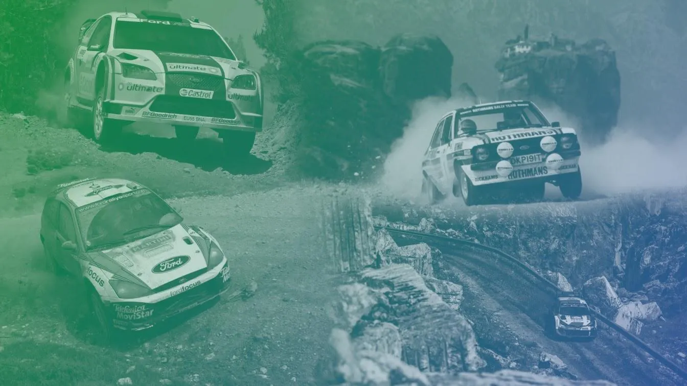
Route History of the Acropolis Rally: Stats Special
The Acropolis Route History series may have ended, but we can still observe some interesting stats. Which were the most used stages? Which were the fastest and slowest stages in the event's history? How did the rally's competitive kilometers change through the years? All this and more, in this statistics-dedicated post!
Stages used in most editions of the rally
Unsurprisingly, Karoutes and Bauxites are the two most used stages. Despite not being used since 1997, Makrirahi is still third.
- Karoutes (25)
- Bauxites (22)
- Makrirahi (20)
- Pavliani (16)
- Tarzan (15)
- Distomo (14)
- Kineta (14)
- Eleftherohori (13)
- Moschokaria (13)
- Elatia (12)
- Prodromos (12)
- Stiri (12)
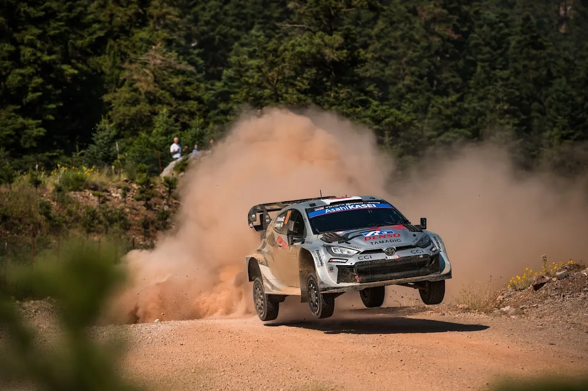
Acropolis Rally Website
Most common rally opening stages
Anavissos is by far the most common first stage, with Parnitha in second. Out of the eight stages used multiple times as the rally's opening stage, six are in Attiki, with Kineta also having its start located in the region.
- Anavissos (7)
- Parnitha (5)
- Imittos (3)
- Athens Olympic Stadium (3)
- Kineta (2)
- Mandra (2)
- Mendenitsa (2)
- Dhekelia (2)
Most common rally ending stages
Only six stages have been used multiple times as the rally's last stage, with Karnezeika from the 80s being the most common.
- Karnezeika (9)
- Stiri (5)
- Loutraki (3)
- Tarzan (2)
- Eleftherohori (2)
- Karakolithos (2)
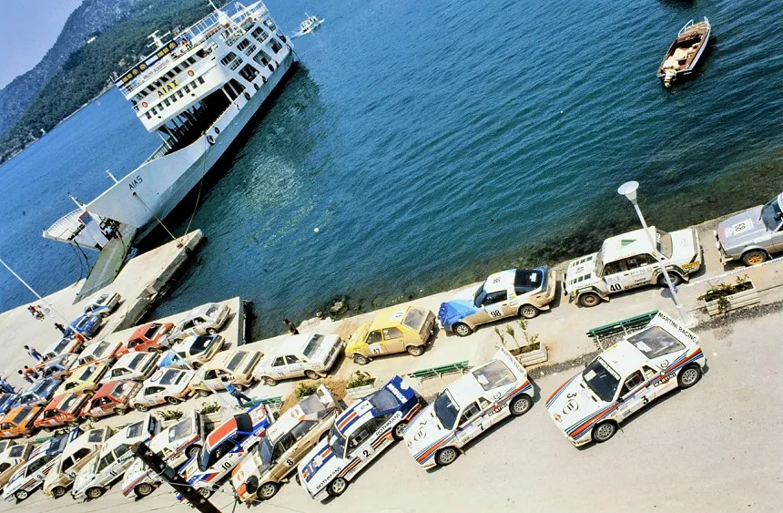
Aris Psychas / Facebook
The 10 fastest stages (1973-2025)
Three out of the ten stages on this list were shortened before the rally, (Kineta 2000, Loutraki 2023 and Stiri 2001). Mandra from 1973 was likely on tarmac, and features on the top of the list.
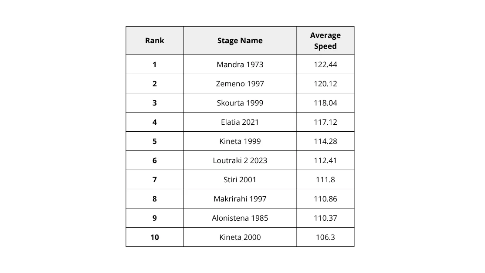
The 10 slowest stages (2000-2025), exlcuding SSSs
Most of the stages on this list are twisty mountain stages, but Schimatari and Loutraki are not! They are just sandy, twisty and technical on their own.
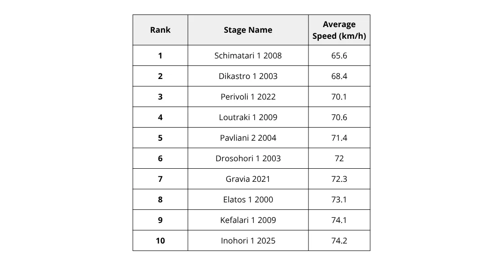
Areas with the most different stages
Fthiotida is the region with the largest number of different stages. Surprisingly, Fokida has 28, enough for only fourth place. Attiki's total is inflated by SSSs and also the 1989 and 1990 editions, which used many stages in the area.
- Fthiotida (42)
- Viotia (34)
- Attiki (29)
- Fokida (28)
- Arkadia (17)
- Corinth (15)
- Lakonia (13)
- Aetolia-Acarnania (11)
- Larissa (10)
- Argolida (9)
Areas that were used the most
Fthiotida is again the region that has been used the most in the Acropolis Rally. Fokida jumps to second, as the stages in the area have been used a lot throughout the years. Trikala only has 6 stages, but they've been used a combined 26 times!
- Fthiotida (197 stage runs)
- Fokida (160 stage runs)
- Viotia (114 stage runs)
- Attiki (87 stage runs)
- Corinth (86 stage runs)
- Arkadia (59 stage runs)
- Lakonia (56 stage runs)
- Aetolia-Acarnania (34 stage runs)
- Argolida (28 stage runs)
- Trikala (26 stage runs)
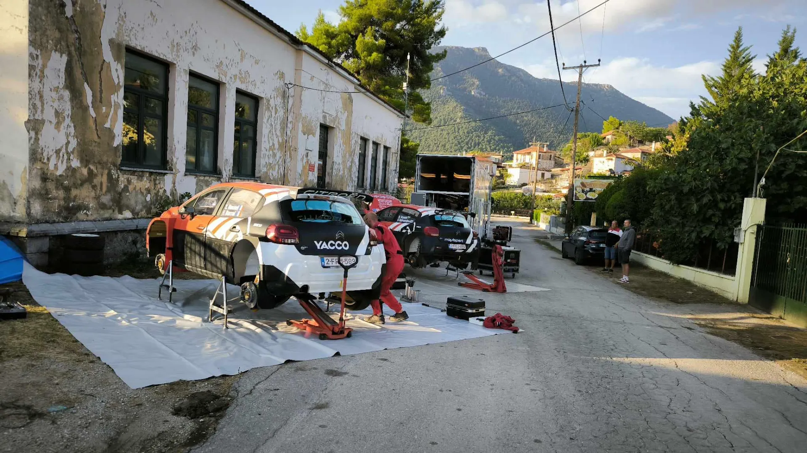
Mendenitsa / Facebook
Stages with the same name, that share no route
With as many different configurations, unsurprisingly, stages in Loutraki feature a lot on this list. Other older stages feature here due to their original routes being paved.
- Loutraki 2024/25 - Loutraki 2023-2007
- Loutraki 2007/09 - Loutraki 2025/24, Loutraki 2023, Loutraki 2021, New Loutraki 2011/12
- Aghii Theodori 2021 - Aghii Theodori 2011/12
- Pissia 1990 - any other version of Pissia
- Elatia 2025 - Elatia 2021
- Mandra 1973 - any other version of Mandra
- Psatha 2006/08 - the older Psatha stage
- Elikonas 1996 - Elikonas 1980s - Elikonas 2012
- Livadia 2022/23 - Livadia 1996-2001
- Inohori 2001 - Inohori 2024/25
- Kaloskopi 1990 - Kaloskopi 1996
- Pavliani 1992/93 - any other version of Pavliani
- Perivoli 1992-94 - Perivoli 2005, 2025
- Smokovo 1981 - Smokovo 2025
Stages with mostly the same route and direction, but used different names
Once again, stages in the Loutraki area dominate this list. It's not a surprise, as roads in Loutraki have been used under every name imaginable.
- Aghii Theodori 2011/12 - Loutraki 2021
- Loutraki 2023 (planned) - Nea Politia 2011
- Loutraki 2013 - Aghii Theodori 1999
- Loutraki 2024/25 - Pissia 2013
- New Pissia 09-12 - Harvati 1990-93
- Loutra Smokovou 1991-93 - Aidonohori 1994
- Elikonas 2012 - Kiriaki 1997
- Pissia 1990 - Aghia Marina 2012
Stages with the same name that are in different areas
With the event visiting most of continental Greece at its height, it's no surprise that there are some "duplicates" that are not near each other.
- Dionissos (Viotia and Attiki)
- Dafni (Viotia and Fthiotida)
- Perivoli (both in Fthiotida, but different places)
- Zemeno (Corinth and Viotia)
Stages with the most different roads used
No surprise there, stages in the Loutraki area occupy three out of the first four places. Prodromos used many different sections in the Elikonas mountain. Interesting to note that Neraida and Alouminio only had two different configurations, and Parnon only had one.
- Aghii Theodori 95km
- Kineta 83.1km
- Prodromos 80.58km
- Loutraki 69.81km
- Neraida 67.5km
- Elatia 59.85km
- Alouminio 54.50km
- Rengini 52.02km
- Karoutes 48.37km
- Parnon 47.64km
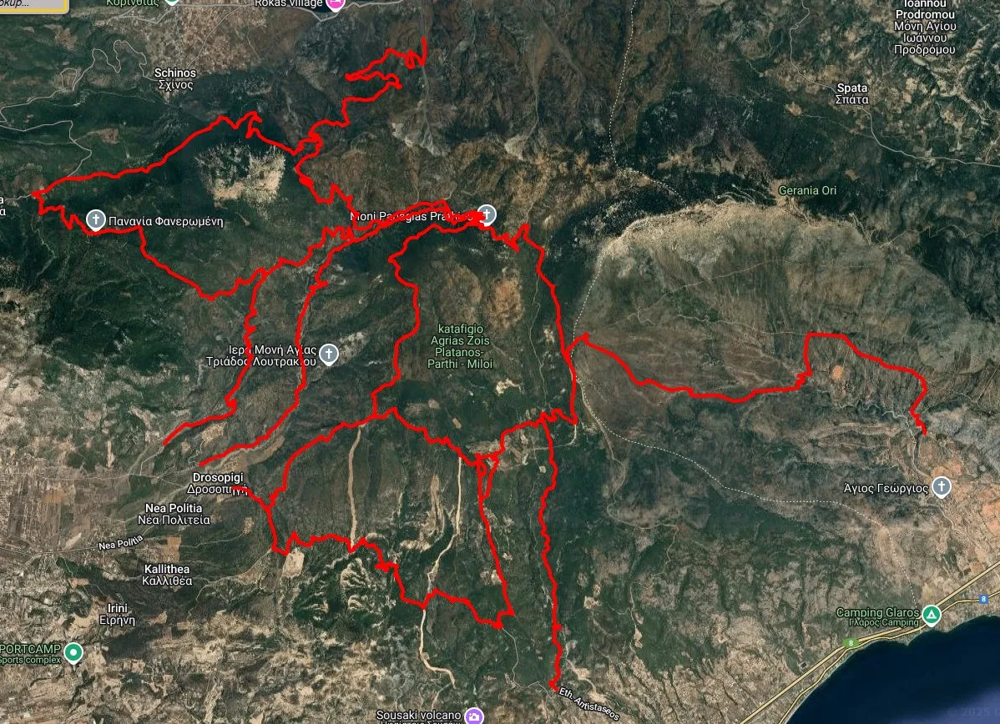
All the different roads that have been used as part of SS Aghii Theodori
The 10 longest stages used in the Acropolis Rally
Most of the stages here are from the late 70s and early 80s. The two most recent inclusions are combinations of roads in the Loutraki area.
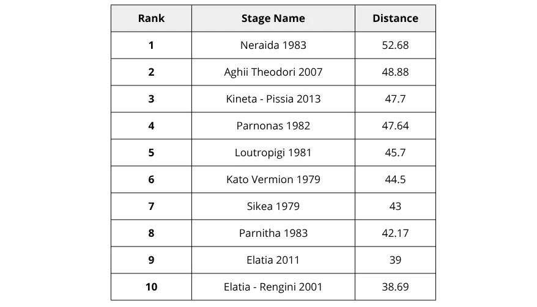
The 10 shortest stages used in the Acropolis Rally (non SSS)
There's a lot of stages from the 70s and 80s. New Loutraki was the rally's first Power Stage, and Stiri had to be shortened to 3.5km before the rally.
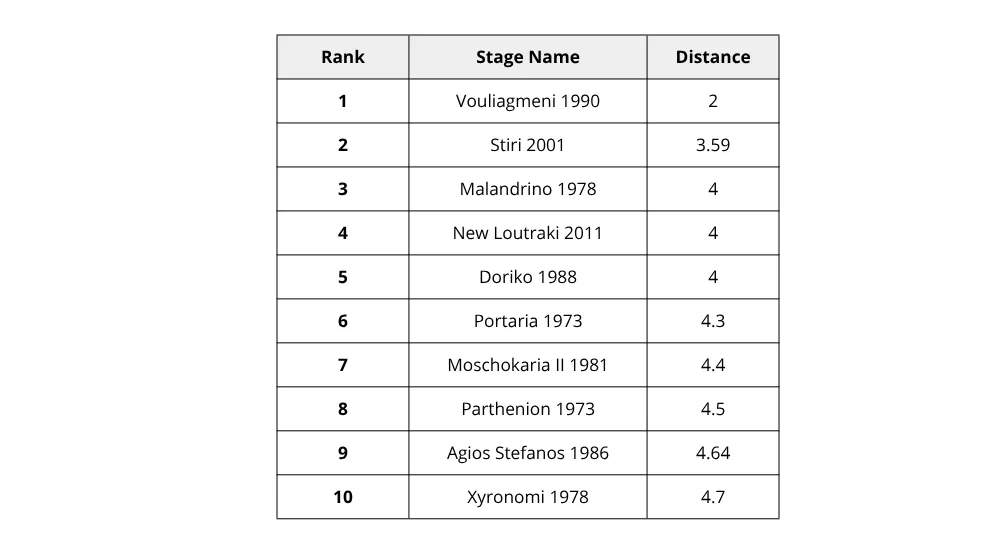
Rally mileage evolution
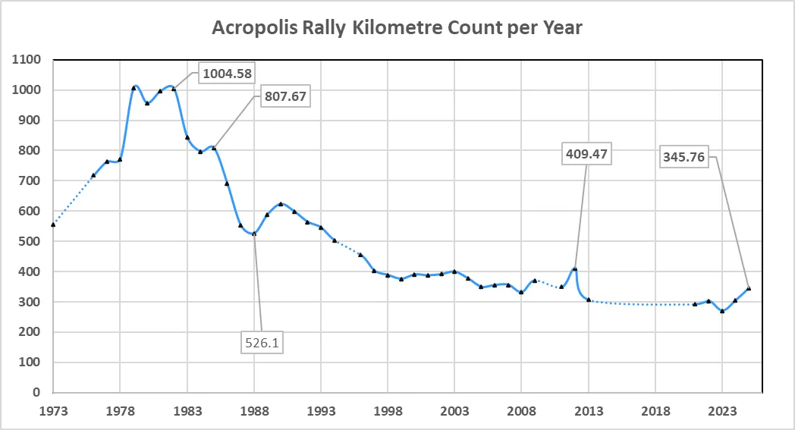
The rally peaked in 1982 with 1000 competitive kilometers, and after that it kept getting smaller and smaller. After a small rise from 1989 to 1990, the rally kept decreasing in size, plateauing at about 400-350km. The 2012 edition was the last time the event exceeded the 400km barrier.
Finishing percentage evolution
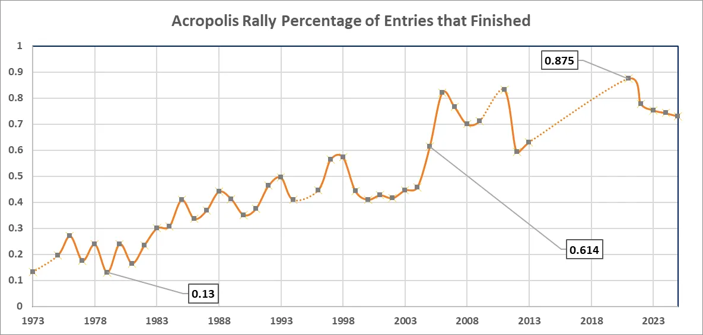
13% was the lowest amount of finishers back in 1979. It steadily saw more finishers, with the full introduction of Super Rally in 2005 meaning most of the entries would make it to the finish. 87.5% was the biggest percentage of finishers, in 2021.
Tarmac/Paved stages that are now used in local rallies
Stages that were used when tarmac stages were allowed in the rally, or gravel stages that have since been paved, have found a second life as part of other regional rallies, or them being used as hillclimbs.
- Agios Ioannis - Rally Paladio
- Agios Merkourios - Athens Rally Sprint
- Alepohori - Rally Paladio
- Ahladokambos - Hillclimb
- Elikonas - Hillclimb
- Hani Zagana - Rally Fthiotidos
- Inohori - Rally Fthiotidos
- Kaloskopi - Rally Fthiotidos
- Meteora - Rally Sprint Meteora
- Moschokarya - Rally Fthiotidos/Hillclimb
- Platanaki - Evoiko Rally
- Portaria - Rally Kentavros/Portaria Hillclimb
- Pilion - Rally Kentavros
- Polydendri - Rally Filippos
- Ritsona - Evoiko Rally/ Ritsona Hillclimb
Comments